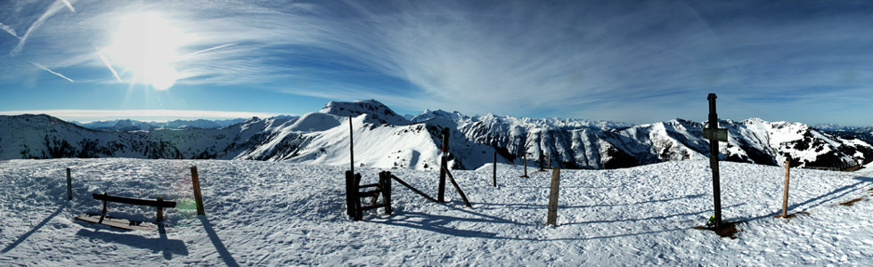
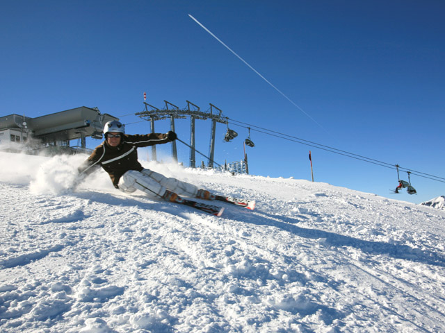
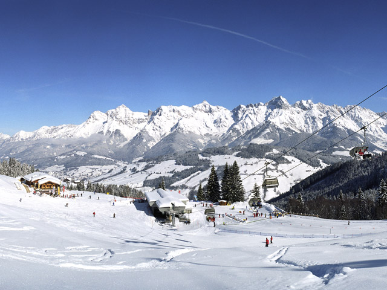
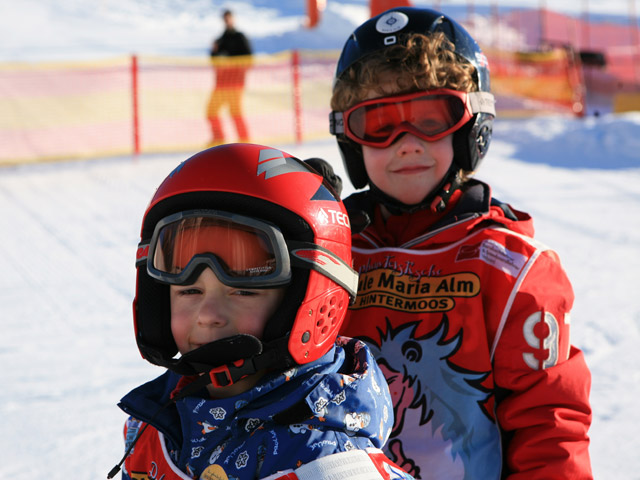

Aktiv im Winter
- 30 km bestens präparierte Langlaufloipen
- Unbegrenzte Möglichkeiten für Tourengeher
- 85 km geräumte Wege für Winter- und Schneeschuhwanderungen in Maria Alm, Dienten und Mühlbach
- Zahlreiche Rodelbahnen
Die Winterzauberwelt am Fuße des Hochkönigs wartet darauf entdeckt zu werden. Das winterliche Maria Alm eröffnet eine Vielzahl an aufregenden Möglichkeiten.




34 Seilbahn- und Liftanlagen und 150 km Pisten auf einer Höhe von 860 bis 1.900 m warten auf Sie in einer der schönsten Skiregionen der Alpen.
Ihr Skipass gilt in 5 Regionen, 25 Orten, umfasst 860 km Pisten und 270 Lifte.